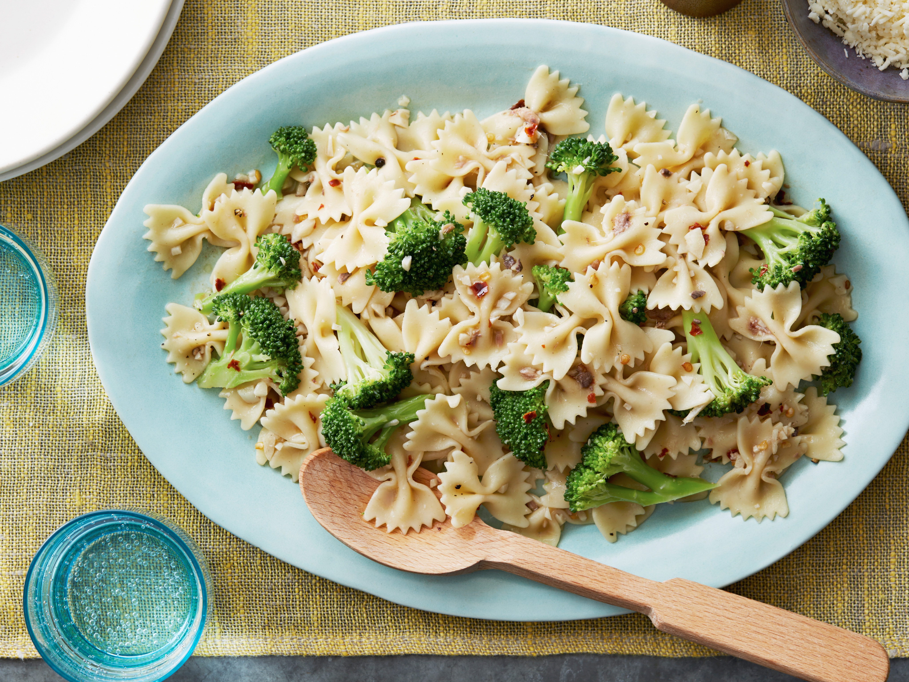

Farfalle

- Bring a large pot of salted water to a boil over high heat. Add the pasta and cook, stirring occasionally.
- After 5 minutes, add the broccoli florets to the pasta and stir and cook for another 4 minutes.
- Drain pasta and broccoli, reserving 1 cup of the pasta water.
- Meanwhile, in a large skillet, heat the olive oil and butter over medium heat.
- Add the garlic, anchovies, and red pepper flakes and cook for 5 minutes.
- Add the broccoli, pasta, salt and pepper and toss. Add some of the reserved pasta water, if necessary, to make a light sauce.
- Transfer to a serving platter and sprinkle with Parmesan.
Back to Main